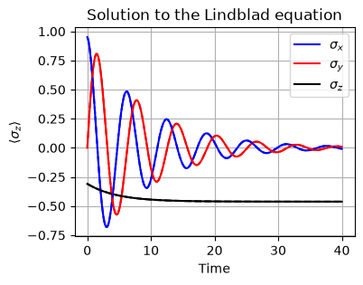
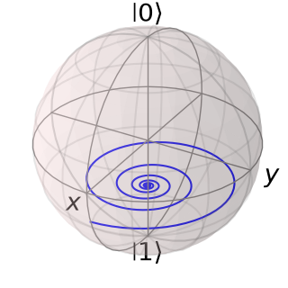
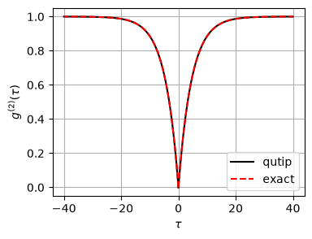

12. Quantum master equations#
As we discussed in Chapter 2, coherence is not a property of the system. It is a property of a reduce density matrix expressed in a certain basis set. Rigorously speaking, we need to find the density operator of the whole system including at least the emitters and the radiation field and then take partial trace over the radiation field. However, it is very difficult to do so. Under a weak coupling limit, there is a direct method to compute the reduce density matrix without computing the state of the whole system. The method is known as open quantum system approach. In many practical cases, the interaction between the radiation field and the emitters is weak and such approach works quite well. Using the reduced density matrix, we can compute ensemble average like regular quantum mechanics.
for a closed system, we solve the Schrodinger equation \(i \frac{d}{dt} |\psi\rangle = H |\psi\rangle\) or the Liouville-von Neumann equation \(i \frac{d}{dt}\rho = [H , \rho]\). In the open quantum system approach, we solve a quantum master equation (also known as Lindblad equation)[5], \(\frac{d}{dt}\rho = \mathcal{L} \rho\) which is introduced below.
12.1. Derivation of quantum master equation - a summary#
Here a very brief summary of the derivation steps is provided so that we know what approximations are used. Read a textbook listed in the previous page for the full derivation. Consider a system S surrounded by a thermal reservoir R. We assume that the reservoir is an ideal heat bath which remains in thermal equilibrium all time. which is a key assumption to derive quantum master equation. The total system S+R is completely isolated and thus its time evolution is unitary. The Hamiltonian of the total system can be divided to three parts:
where \(H_\text{S}\), \(H_\text{R}\) and \(V_\text{SR}\) are the Hamiltonian for the system S, the reservoir R, and the interaction between S and R. \(I_\text{S}\) and \(I_\text{R}\) are identity operators in each Hilbert space.
The state of the total system is described by the density operator \(\rho_\text{SR}\) and its time evolution is determined by the Liouville-von Neumann equation
To solve this equation, two approximations are introduced.
The interaction between S and R is weak enough to use the Born approximation (1st order perturbation). Only \(V_\text{SR}\) and (\(V_text{SR})^2\) are taken into account and all higher order terms are neglected.
The reservoir is always in the thermal state \(\rho_\text{R} = \text{tr}_\text{S} \left( \rho_\text{SR} \right)= \frac{1}{Z_\text{R}} e^{-\beta H_\text{R}}\) where \(\text{tr}_\text{S}\) is a partial trace over the system Hilbert space. \(\beta\) and \(Z_\text{R}=\text{tr}_\text{R} e^{-\beta H_\text{R}}\) are usual inverse temperature and the partition function.
When the reservoir is disturbed, it instantaneously relaxes to the original equilibrium state. Hence, the state of reservoir remains in \(\rho_\text{R}\) all time. This implies that the reservoir has no memory of past events. This assumption is called the Markovian approximation.
The coupling Hamiltonian is separable. Mathematically, \(V_\text{SR} = \sum_{i} A_i \otimes B_i\). Further we assume that \(\langle B_i \rangle = \text{tr} \left( B_{i} \rho_\text{R} \right) = 0\).
We introduce jump operators, each of which represents either excitation or deexcitation process.
(12.1)#\[ A_{i} (\omega) = \sum_{k,k'} \delta(E_{k} - E_{k'} - \omega) |k\rangle \langle k | A_{i} |k' \rangle \langle k'| \]\(A_{i}(\omega)\) and \(A_{i}^{\dagger}(\omega)\) behave like annihilation and creation operators for \(i\)-th mode. From the completeness relation \(\sum_{\omega} A_{i}(\omega) = \sum_{\omega} A_{i}^{\dagger}(\omega) = A_i\).
All the effects of the reservoir are taken into account through the temporal correlation of the reservoir operators.
\[ c_{ij}(\tau) = \text{tr}_\text{R} \left(B_j(\tau) B_i(0) \rho_\text{R}\right), \quad \tau>0. \]Based on the Born-Markovian approximation, the state of the system can be approximated as \(\rho_\text{SR} (t) \approx \rho_\text{S} (t) \otimes \rho_\text{R}\) where \(\rho_\text{S} = \text{tr}_\text{R} \rho_\text{SR}\).
At last we have a general form of quantum master equation.
where \(\mathcal{D}\) is a superoperator known as dissipator. It acts on a density operator as
where \(\{\cdot,\cdot\}\) is anti-commutator and the dissipation rate \(\Gamma_{ij}\) is the Fourier transform of the correlation function:
In Equation (12.2), the unitary part include is a Lamb shift \(H_\text{LS}\) defined by
Mathematically speaking, the Lamb shift diverges. To resolve this issue, we need to use mass renormalization in the relativistic quantum field theory. The shift is found to be very tiny. Hence, we shall omit it throughout this lecture note.
The quantum master equation (12.2) works well only when the Born-Markovian approximation is valid. In many applications in quantum optics, the approximation holds reasonably well.
To simplify mathematical notation, the master equation (12.2) is often expressed as
with a super operator \(\mathcal{L}\), known as Liouvillian, which acts on density operator as
which allow us to write a solution to the master equation as
We shall utilize the simplistic expression from time to time.
By changing the basis, the \(\Gamma_{ij}\) in Eq. (12.3) can be diagonalized. The diagonal form of the disspator is written
which is the standard form shown in literature. The operator \(L_i\) is often called Lindblad operator or jump operator. Yet another form is often used, in particular QuTiP. The \(\Gamma_i\) is absorbed into the definition of jump operators and the dissipator is written as
where \(C_{i}(\omega) = \sqrt{\Gamma_i(\omega)} L_i(\omega)\), which we shall call collapse operator.
12.2. Optical master equation for thermal fluorescence#
Consider a single atom is in a free radiation field. The Hamiltonian of the atom is given by Eq. (6.3). The environment is a photon gas at temperature \(T\). The Hamiltonian of the photons and the free radiation field are respectively given in Eqs. (7.1) and (7.2). The coupling between the atom and the field with the rotating wave approximation is Eq. (7.6). Taking the rotating wave approximation, the interaction Hamiltonian is simplified to
Following the standard derivation of quantum master equation (a bit lengthy calculation)[5, 21, 22], we obtain two channels of dissipators, one for absorption
and the other for emission
The dissipation rates are
where the rate of spontaneous emission is defined by
and the Planck distribution by
The jump operators are \(A^{a} = \sigma_{-}\) for absorption and \(A^{e} = \sigma_{+}\), which are obvious from the definition of \(\sigma_{\pm}\).
The final form of the quantum master equation is
which is simply an ordinary differential equation of \(2\times2\) matrix. This is simple enough to solve analytically.
12.3. Bloch equations#
There are many ways to solve Eq. (12.4). There is a special method that works only for the two-dimensional Hilbert space. Recalling that the identity matrix \(I\) and the Pauli matrices \(\sigma_{i}\) form a basis set. Expanding the density operator in the basis set,
where \(\vec{\sigma} = (\sigma^{x}, \sigma^{y}, \sigma^{z})\) and \(\vec{r}(t) = (r_{1}(t),r_{2}(t),r_{3}(t))\) is the Bloch vector, which uniquely determine the density operator.[5, 22] Since the density operator is self-adjoint, \(\vec{r}\) is real. In fact, it is easy to show that \(\vec{r} = \langle \vec{\sigma}\rangle = \text{tr}\left[\vec{\sigma}\rho(t)\right]\). Multiply \(\vec{\sigma}\) to Eq. (12.4) and taking trace, we obtain the equation of motion for the Bloch vector is given by
where \(\gamma = \gamma_0 (2N+1)\). Equation (12.5) is called the Bloch equation.[5, 21]
By letting the left hand side 0, we can immediately find the steady state.
The probability to find the atom in the excited state is given by
which is just the thermal equilibrium state. Hence, the system is relaxed to the thermal state.
Next, we calculate the relaxation to the thermal state starting from a pure state \(|\psi_0\rangle = \cos \theta |0\rangle + \sin \theta |1\rangle\), which gives the initial density operator
The initial condition for the Bloch equation is
The solution is
which indicates \(\gamma\) is the relaxation rate.
A nice things about the Bloch equation is that you can visualize the solution on the Bloch sphere. We will see it in the numerical example.
Equation (12.7) that this process involves the dissipative type of decoherence with \(T_1 = 1/\gamma\) and \(T_2 = 2/\gamma\). Thus \(T_2= 2 T_1\) as mentioned in Chapter 2.
12.4. Solving a master equation numerically using QuTiP#
As introduced in Chapter 11, QuTiP has a module to solve quantum master equations.
The following code solve the same master equation as the above and plots the Bloch vectors. The theoretical results are also plotted with dashed lines. Since the numerical results agree with the analytical solution perfectly, the theoretical plots are invisible. We also plot the evolution of Bloch vector in the Bloch sphere. The state is initially on the surface of the Bloch sphere since it is a pure state. Then, the state spirals down to the thermal equilibrium located on the \(z\) axis.
import matplotlib.pyplot as plt
import numpy as np
from qutip import *
# Parameters
omega0 = 1.0 # excitation energy
gamma0 = 0.1 # spontaneous emission rate
temperature = 1.0 # tempeature of photon gas
N = 1/(np.exp(omega0/temperature)-1) # Planck distribution
theta = 2*np.pi/10 # initial condition
gamma1 = gamma0 * N # coefficient to absorption
gamma2 = gamma0 * (N+1) # coefficient to emission
gamma = gamma1+gamma2
# Hamiltonian for a two-level system (in the rotating frame)
H = 0.5 * omega0 * sigmaz()
# Jump operators
c_ops = [np.sqrt(gamma1) * sigmap(),np.sqrt(gamma2) * sigmam()]
# Initial state: start in the ground state |g>
psi0 = basis(2,0)*np.sin(theta) + basis(2,1)*np.cos(theta)
# evaluation time
times = np.linspace(0, 40, 400)
# observables to compute
observables = [sigmax(),sigmay(),sigmaz()]
# solve the Lindblad Equation
result = mesolve(H, psi0, times, c_ops, e_ops=observables)
# analytical solutions
sx_exact = np.exp(-times*gamma/2)*np.cos(omega0*times)*np.sin(2*theta)
sy_exact = np.exp(-times*gamma/2)*np.sin(omega0*times)*np.sin(2*theta)
sz_exact = -np.exp(-times*gamma)*np.cos(2*theta) -1/(2*N+1) * (1- np.exp(-times*gamma))
# 4. Plotting the Time Evolution
plt.figure(figsize=(4, 3))
plt.plot(times,result.expect[0], label=r"$\sigma_x$",c='b')
plt.plot(times,result.expect[1], label=r"$\sigma_y$",c='r')
plt.plot(times,result.expect[2], label=r"$\sigma_z$",c='k')
plt.plot(times,sx_exact, linestyle='--',c='b')
plt.plot(times,sy_exact, linestyle='--',c='r')
plt.plot(times,sz_exact, linestyle='--',c='k')
plt.title("Solution to the Lindblad equation")
plt.xlabel("Time")
plt.ylabel(r"$\langle\sigma_z\rangle$")
plt.legend(loc=1)
plt.grid(True)
plt.show()

plt.figure()
b = Bloch(figsize=(3,3))
b.add_points(result.expect, meth='l') # 'l' adds a line between points
b.show()
plt.close()

12.5. Coherence functions#
Here we evaluate the coherence functions for emission. Be reminded that strictly specking we are not calculating coherence a detector observed. What we are going to calculate is the counting statistics of emission. There is a strong connection between emission counting and detection counting, which we will discuss in next section. Replacing creation and annihilation operators in the definition of coherence functions (4.3) and (4.10) with raising and lowering operators we obtain
and
Recall that the coherence function for a single mode does not depend on the location of the detector.
12.6. Quantum regression theorem#
There is a problem with the definitions (12.8) and (12.8). We don’t how to calculate the expectation values since two different times are involved. There is a trick that works only when the Born-Markovian approximation is valid as discussed next.
Suppose that the expectation value of an operator \(A\) evolves in time. It should be written as \(\langle A \rangle_t\) (expectation evaluated at time \(t\)) but often written as \(\langle A(t) \rangle\) which suggests that \(A\) depends on time. If the system evolution is unitary, then \(A(t)\) can be considered as an operator in the Heisenberg picture and the average is taken with respect to an initial state. However, when the evolution of the system is not unitary, we can’t define the usual Heisenberg picture. We interpret it as \(\langle A(t) \rangle \equiv \text{tr}(A \rho(t))\) where the state is evolving in time and the operator is stationary.
A problem arises when operators depend on two different times. Fortunately, there is a very usefull theorem, known as the quantum regression theorem, which states that
Notice that neither \(A\) nor \(B\) depends on time in the right hand side of the equality. \(B \rho(0)\) is evaluated at \(t=0\) and evolves to t=\(\tau\). Then we take the trace. It is a kind of surprising that the same evolution operator \(e{\mathcal{L}t}\) can be used to evolve \(B\rho\). We can calculate \(e^{\mathcal{L} t} (B \rho(0))\) by solving the quantum master equation with the initial condition \(\eta(0) = B\rho(0)\).
Using the quantum regression theorem, the first order correlation can be computed as
and for the second order we have
where we have rotated the operators inside the trace.
Using Eqs. (6.2), \(e^{\mathcal{L}t} (\sigma^{-}\rho_{ss}\sigma^{+}) = \langle e|\rho| e\rangle e^{\mathcal{L}t}(|g\rangle\langle g|)\) , we find an explicit expression of the correlation function
where \(\rho(\tau;g)\) is a state at \(t=\tau\) starting from the ground state at \(t=0\) and \(p_{e}(\tau;g)\) is a conditional probability that the system is in the ground state at \(t=0\) and in the excited state at \(t=\tau\). \(p_{s}^{ss}\) is the probability of the steady state being in \(|e\rangle\) which we already know from (12.6). Noting that \(\lim_{\tau \rightarrow \infty} p_{e}(\tau;g) = p_{e}^{ss}\), we find \(\lim_{\tau \rightarrow \infty} g^{(2)}(\tau) = 1\). On the other hand, \(\lim_{\tau \rightarrow 0} p_{e}(\tau;g) = 0\) since \(|e\rangle\) and \(|g\rangle\) are orthogonal. Thus we have \(g^{(2)}(0) = 0\).
From the final expression of Eq. (12.10), only we need is \(p_{e}(\tau;g)\) which can be obtained by solving the master equation. Using the general solution (12.7) with initial condition \(\theta=0\), we find \(p_{e}(\tau;g) = \frac{1}{2}\left(1-e^{-\gamma \tau}\right)\left(1+\langle\sigma_z^{ss}\right)\) and \(p_{e}^{ss} = \frac{1}{2}\left(1+\langle\sigma_z^{ss}\right)\). WE obtain an explicit expression of the second-order coherence:
The following code calculates it numerically using qmesolver in QuTip, which agrees with the analytical result. The plot shows clearly anti-bunching.
# Continued from the previous code block.
# You need to execute it before running this code.
# We already set up Hamiltonian H, collapse operators c_ops
# in the first code block in this page.
# We need to modify
# 1) psi0 - initial state
# 2) operator to be measured. that is sigmaz
psi0 = basis(2,1)
result = mesolve(H, psi0, times, c_ops, e_ops=sigmaz())
pe_tau = (1+result.expect[0])/2
pe_ss = N/(2*N+1)
g2 = pe_tau/pe_ss
g2_exact = 1-np.exp(-gamma*times)
plt.figure(figsize=(4,3))
plt.plot(times, g2,c='k',label="qutip")
plt.plot(-times,g2, c='k')
plt.plot(times, g2_exact, c='r', linestyle='--',label="exact")
plt.plot(-times, g2_exact, c='r', linestyle='--')
plt.xlabel(r'$\tau$')
plt.ylabel(r'$g^{(2)}(\tau)$')
plt.legend(loc="lower right")
plt.grid(True)
plt.show()
